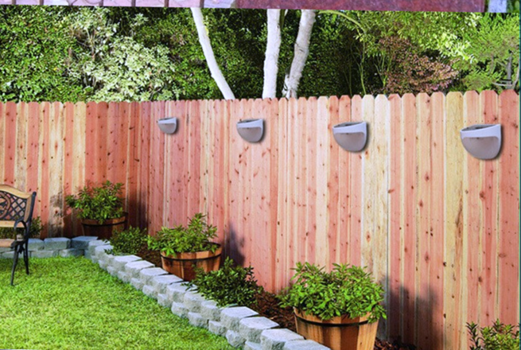

Качественный электромонтаж, Стаж 12 лет. Частный электрик, недорого.
Тел. 8 904 642 08 57 Николай.

Освещение забора как важная часть обустройства территории.
Частный электрик.
Освещение забора играет важную роль в благоустройстве участка. Во-первых, оно обеспечивает безопасность передвижения по участку и около него. Во-вторых, несет декоративную нагрузку. Правильно подобранные светильники для забора, яркость света и его цвет могут кардинально изменить восприятие всей ландшафтной композиции и преобразить ее. В-третьих, освещение забора в некоторой степени играет защитную роль, поскольку, по статистике, злоумышленники реже проникают на освещенные участки, ведь свет на частной территории всегда создает ощущение присутствия хозяина.
Сколько стоит сделать светильники на заборе.
Цена начинается от 400 руб. за светильник под ключ.
Необходимо помнить, что освещение забора также должно гармонировать с освещением ворот и калитки. Не следует допускать, чтобы освещение забора выделялось из общего дизайна ограждения.
Как выбрать светильники.
В настоящее время существует широкое разнообразие светильников для заборов. Они отличаются друг от друга не только по внешнему виду, стилю, в котором они выполнены и материалу, но и по типу необходимых для их работы ламп. Например, существуют светильники, приспособленные для ламп накаливания, энергосберегающих ламп, галогенных и светодиодных. Наиболее современными и экономичными являются светильники с энергосберегающими лампами и светодиодами.
Однако энергосберегающие лампы имеют ряд недостатков при использовании на улице, поскольку они не устойчивы к низким температурам и не терпят слишком высокие показатели. К тому же они неэкологичны, ведь в них содержится ртуть.
Освещение на столбах забора.

Светодиоды идеально переносят перепады температуры, которые никак не влияют на их яркость и работоспособность. Светодиоды стоят несколько дороже других типов лам, но они служат намного дольше, и частое включение и выключение не влияет на срок их службы. Кроме того, их использование позволяет осветить забор практически в любой цвет, а также они не содержат ядовитых веществ.
Выбрав тип осветительного элемента необходимо уделить внимание дизайну светильника для забора. Он должен сочетаться по цвету и материалу с забором, окружающим пространством и желательно повторять контуры уже имеющихся на участке светильников. Для того чтобы светильники были наиболее экономичными, можно выбирать варианты, оснащенные солнечными батареями.
Установка освещения забора.
Установка любых осветительных приборов – специфическая операция, которую лучше всего доверить профессиональным электрикам. Если же вы решили самостоятельно установить освещение, необходимо, прежде всего, выполнять работы согласно правилам техники безопасности.
Все провода укладываются в специальные траншеи, предварительно их протягивают в специальные короба или трубы, которые защитят их от быстрого износа в условиях почвы и случайного прорубание садовым инструментом. Затем провода подводятся к каждому столбу забора, изолируются, а затем подключаются светильники.

Сделать электрику в квартире.
Расценки на электропроводку квартир.
Провести электропроводку в новостройке.
Электромонтаж в частном доме.
Электрика в загородном доме.
Сколько стоит замена электропроводки в двухкомнатной квартире?.
Сколько стоит проводка в 3 ком квартире?
Сколько стоит проложить проводку в четырех комнатной квартире?
Сколько стоит сделать внутреннюю проводку?
Стоимость штробление стен.
Электромонтаж двухкомнатной квартиры.
Замена электропроводки в панельном доме.
Электромонтаж проводов в бане.